It should have been an achievable adventure, an old-style family jolly, nicely within the capacity of different-aged adults, an old wooden boat, visiting children and dogs. Three of my grandchildren would be sailing from the Mount Batten Centre in Plymouth for the Cadet dinghy national and world championships. My son Frank and daughter-in-law Alice were lead organisers; Francis and I were among the sponsors. This would also be my oldest granddaughter’s last event. Retirement comes at 17 in the uniquely child-centred Cadet dinghy class.
What could be more
fun for me, my brother Ned, son Bertie, dogs Nellie and Solo, than to spend a
week or two sailing Peter Duck to Plymouth from Suffolk, so we could show our support for the young sailors and watch the racing from on deck? Yes, it’s 300
miles – we could reach Scotland for that, or the entrance to the Keil Canal –
but, taken in stages, it would be a matter of six long days or eleven shorter
ones. Time on land for the dogs to empty their bladders and stretch their legs; time
for our exclusively East Coast crew to pause and explore exotic destinations
such as Lymington, Bridport and Salcombe. Time for both my nieces to join for a
few days each. We told each other stories of white cliffs and blue waters and
imagined the thrill of sailing into historic Plymouth Sound. We avoided talking
about the strong south westerly winds which would be against us and the lack of
sheltered anchorages along that first stretch of the south coast, should we
encounter any difficulties.
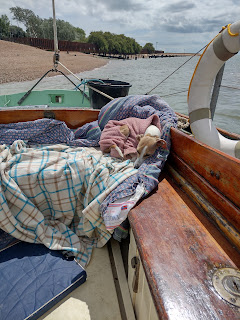 |
| Nellie on Peter Duck in the River Deben Dreaming of adventure? |
{kind=link}
Two new crew members, ‘Polly’ and ‘Tubby’, were signed on to the Peter Duck team. Polly may need a little explanation. Long ago, when my mother reached her 70th birthday, she took herself off to a racing stable in Newmarket and bought her own birthday present. This was an obdurately characterful 13.3hh skewbald pony called Polly who tormented us for the next twenty-five years. Every time we thought we’d found her a more suitable new home (once poor Mum had admitted she could no longer cope) Polly would behave so badly that she was almost immediately sent back, looking smug.
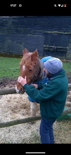 |
| My mother and her birthday present |
{kind=link}
I’m said to be increasingly like my mother so, as I reached that same significant birthday this year, my family were naturally worried. Wisely they clubbed together and commissioned Simon Scammell of Suffolk Sails to make PD a new masthead genoa—a lovely big white sail that will pull her along in the lightest of breezes. She’s been needing one since she came home from Russia 26 years ago with a donated sail that had a bigger belly than the onion towers of the Kremlin. My beautiful birthday gift has been christened Polly but, as yet, shows no regrettable tendencies to squeal, nip, launch itself into ditches or punch out with a gymnastic hind leg. It has, in fact, transformed PD’s performance, giving her just the extra power she needs on sunny summer days.
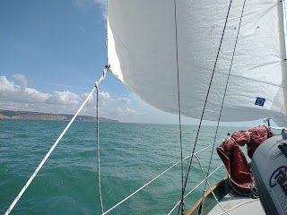 |
| Polly the helpful |
.jpg){kind=link}
Tubby is a tablet, loaded with Navionics software and connected to GPS and to Peter Duck’s VHF system, which enables him to receive information via AIS (Automated Identification System). He’s an android with a massive battery, a clear screen and a particularly useful padded hand grip which one can hang onto whilst jabbing one’s fingertip onto the green slipper shape that could be another harmless yacht also crossing the Estuary or a large container ship from London Gateway bashing down the Barrow Deep heading for Hamburg. Tubby's AIS will tell us all about her, including calculating the crucial details of closest proximity and when that might be. So much more convenient than crouching in front of PD’s small elderly radar screen fitting position lines onto fuzzy dots to avoid potential collisions. Historically not everyone in the crew has been confident using the radar set, whereas tablets, like large phones, are familiar items. Tubby can be passed from hand to hand so everyone on board understands where the potential dangers lie and can see the avoidance strategy.
Similarly with the navigation. While of course we carry paper charts and almanacs and pilot guides (big shout out here for the calculation tables in Roger Gaspar’s Crossing the Thames Estuary) and we plan in advance using tidal stream information; the advantage of the tablet and its electronic system is that it’s so easily shareable in real time. Gone are the days when the navigator chews his pencil in the cabin, furrows his brow, then issues an instruction to the person on the helm to steer 000° for the next three hours. Having Tubby as well as the compass ready to hand feels empowering. And, although I’d made a lot of fuss about not coming sailing to stare at a screen, I have often sailed holding a folded chart. It’s much more interesting to look around the sea space, then glance down to relate direct observations to the printed information. The tablet is really not so different and considerably more informative,
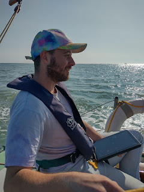 |
| Bertie and Tubby |
{kind=link}
Setting out from the River Deben in Suffolk the first challenge is crossing the Thames Estuary to the North Foreland in Kent. This is a wide expanse of water scoured by deep channels as the tide pours in and out of the London River which are interspersed with shifting sandbanks and shoals quite shallow enough to spell disaster even to a small yacht. All are invisible beneath the surface and the Estuary may appear featureless (apart from its wind farms). It’s somehow rather beautiful to observe a well-spaced line of shipping curving round to reveal the underwater shape of the Swin or the Prince’s Channel, as marked on the chart. Distances can be illusory. The red channel buoy which I might assume to be desirable Barrow no. 2 may turn out to be deceptive Black Deep 6, the far side of an invisible shoal. A quick glance at Tubby (or the paper chart) and I continue confidently on my way.
Even Ned, our
traditional navigator, agreed that the new crew member earned his space in the
cockpit. My niece Ruth, who joined a few days later as we sailed on from Dover, amused herself dotting in
the lobster pots in Pevensey Bay, tech-supremo Bertie began dreaming up even
more user-friendly features for ’App-ier Sailing. The dogs appeared to take
little interest – except that sometimes Bertie wondered whether Solo, the older
of the two and the one who’d experienced an especially stressful estuary
crossing a couple of years earlier in a different yacht, had some positional
bad memories. On land he reliably begins to hyperventilate a mile or two away
from the vet’s and there were moments on this trip when his breathing made us wonder whether he
felt something similar as we sailed over the locations of past crises. In his
normal land life Solo has a clear awareness where he is in relation to the
places where he feels safe or unsafe and it seemed possible that this might
transfer to sea.
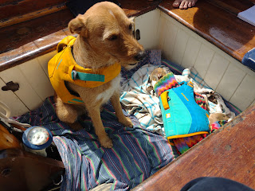 |
| Solo stays on watch while Nellie sleeps in the sun |
{kind=link}
Leaving animal speculation aside, I found the new navigational approach particularly interesting as I was also reading Four Points of the Compass by Jerry Brotton. This new book rings alarm bells about the modern phenomenon of ‘egocentric’ mapping – the way ‘sat nav’ encourages us to see ourselves as the Google blue dot in the centre of our own world and allows us to surrender our wayfinding abilities to electronic systems. Brotton explains the different functions of ‘position cells’ in our brains and quotes recent research in which neuroscientists measured the growth in the hippocampus area of London taxi drivers’ brains when they had undertaken the intensive training required for The Knowledge exam. When the drivers change jobs or retire, their hippocampi shrink back to normal. So, will an increasing reliance on the little red chevron of electronic chart plotter navigation, instead of paper learning, make seafarers stupider?
Before the
traditionalists shout Yes! I would like to answer ‘not necessarily’. I am not an
expert or intuitive navigator, yet with Tubby as an additional tool (not as an
all-encompassing system) I felt more – not less – directionally attuned. Being
out of sight of land, pushed by wind or current, is disorientating for someone
who is used to the comforting feel of the earth – especially if it’s also
compounded by nausea. I focus hard on
training myself to feel at least one of the cardinal directions when I’m
at sea. The other directions become relative and steering by the compass becomes
a more organic process. Good navigation involves bringing together a wealth of
information and prognostication about depths, winds, currents, coast shapes,
some of which can be felt on the body and the vessel, not merely calculated
intellectually. Having the tablet alongside me as I steered on this voyage, intensified rather
than diminished this holistic experience – though I don’t suppose it made much
difference to the size of my hippocampus.
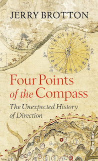 |
| Thought-provoking |
{kind=link}
If only the voyage had been longer. If only we had achieved our destination. I would have learned so much more. But we didn’t. A combination of engine problems, adverse winds and calendar constraints meant we reached no further than Beachy Head. We spent a week in Eastbourne marina waiting for busy engineers. Distant Lymington, Bridport and Salcombe remain unentered harbours.
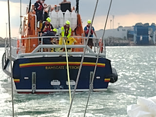 |
| Ramsgate, our first engine failure You are not allowed to sail into harbours & marinas, you must motor and there are no alternative places of refuge on that first stretch of the south coast. No friendly rivers. If you have no engine, you must be towed. This was the beginning of the end of our adventure. |
{kind=link}
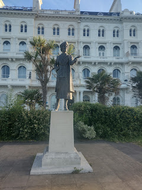 |
| Land-based Nancy Astor looks out from Plymouth Hoe |
{kind=link}
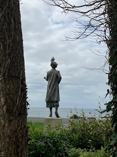 |
| Francis's photo showing what she (and the pigeon) sees |
{kind=link}
I am writing this from a stucco-faced apartment looking out onto Plymouth Sound. In the distance I can see the small white mainsails and colourful spinnakers of more than 100 Cadet dinghies from ten different nations; a tanker from the controversial fuel depot at Cattedown moves slowly seawards; coastal trawlers pass by arousing profoundly mixed feelings – respect for all those who make their living at sea, deep disquiet at the traditional seabed-scraping methods; a frigate waits at anchor until the tide is right for Devonport; a ferry hoots as it sets out for Roscoff or Santander. Yachts come and go on their private adventures. Naomi James sailed round the world from here; Ann Davison and Clare Francis crossed the Atlantic. Lady Astor , the first woman to take her seat in Parliament strides out from the front of this building where I write; a peace garden moves me to tears as I linger in the area dedicated to the victims of slavery. Its air is suffused by the scent of rosemary, not the authentic stench of evil. Beyond it I see the statue of Sir Francis Drake, an uncomfortable juxtaposition.
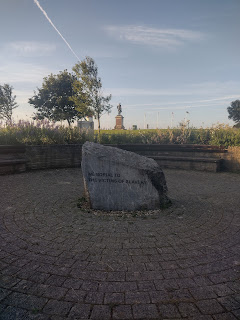 |
| Memorial to the victims of slavery and, beyond it, Drake's statue |
{kind=link}
But Peter Duck isn't here. She's back on her mooring in Suffolk. Her green hull hasn’t rounded that headland and picked her way round into the shelter of yacht haven. We never experienced the thrill of arrival or saw this green Hoe from the sea. I've not watched the dinghy sailors from PD's deck. Our family crew set out with such high hopes. Perhaps the only way to cope with the disappointment is to acknowledge just how much I mind.
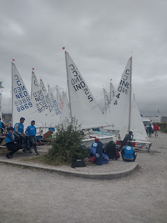 |
| Young sailors from India and the Netherlands waiting to launch |
{kind=link}